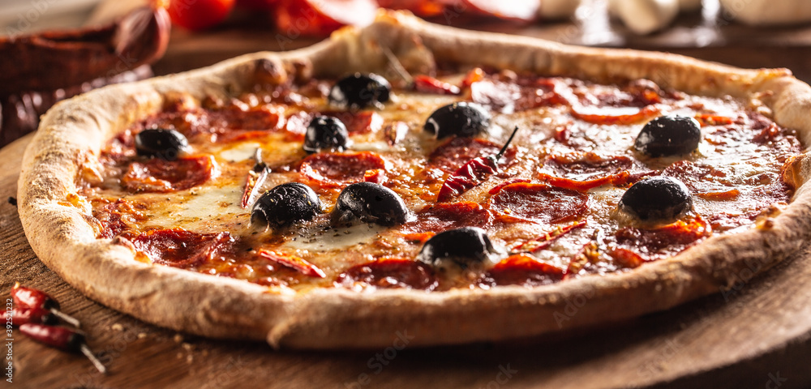

Diavola Pizza

Its name in Italian is mainly due to its spicy flavor that is reminiscent of fire or, failing that, flames. The salchichón or chorizo give their characteristic color to the dough and are the perfect allegory to represent the burning flames that accompany the popular image we have of a devil.
Ingredients
- Pizza dough
- San Marzano Tomatoes
- Fresh Mozzarella cheese
- Italian spicy salami
- A handful of fresh basil leaves
- OLive Oil
Steps
- Preheat your oven to the highest temperature possible
- Extend the dough
- Put the tomato sauce
- Put the salami
- Put the fresh mozzarella cheese into it
- Put some fresh basil leaves and a little bit of olive oil
- Get the pizza into the oven
- In 5 10 minutes take it out put some more olive oil and is ready to eat